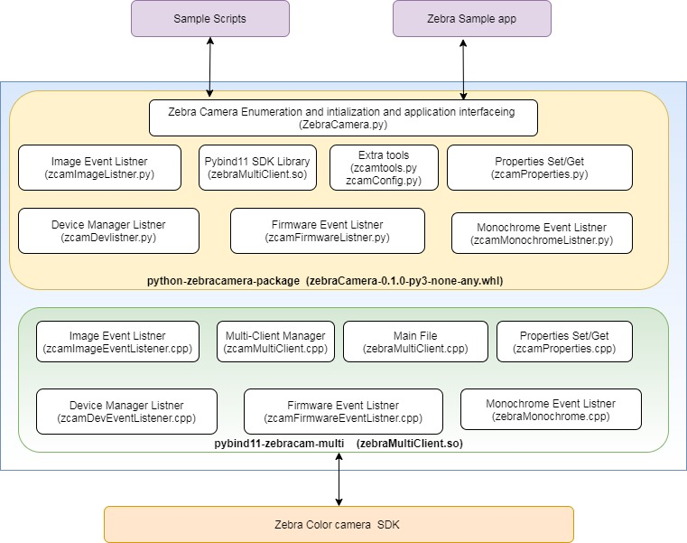
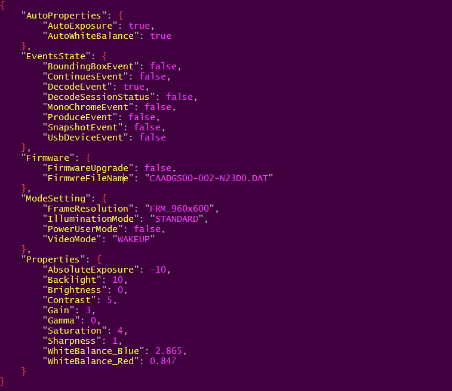
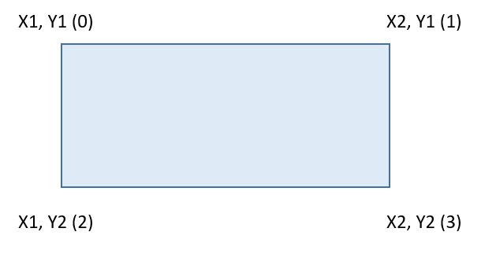

Overview
This section provides detailed information about how to use various functionalities of the Camera SDK python package to develop applications.
Zebra Camera SDK for Python allows Linux applications to be developed that communicate with the MP7001 color / monochrome camera.
The Zebra Camera SDK for Python provides an API's that can be used by external applications to manage and control the camera specific functionality of a connected MP7 Color Camera over USB. The Python package allows camera configuration (setting/getting specific UVC camera properties), capturing snapshot images and streaming of camera video. Specific decode-image and related metadata (decode data) can also be retrieved using the python package API's.
Basics
The Zebra Camera SDK provides the ability to initialize camera connections (via the ZebraDeviceManager), perform various operations with connected cameras, configure connected cameras and retrieve information related to connected cameras via the ZebraDeviceManager, ZebraCameraProperties, ZebraFirmwareManager, ZebraImageManager, ZebraMonochromeManager class.
Using configParameters class and zcamConfig.json file is used to register for device notification events to discover cameras (detect camera attach/detach events). The ZebraDeviceManager class is used to manage connected cameras, create a connection to a specific camera, update firmware, reboot a specific camera.
High Level Architecture

Figure 1: High Level Architecture
Creating Color Camera SDK for Python Applications
To Create python3 based application import the following camera SDK python module to access the API’s of Camera SDK.
from zebraCamera import zebraMultiClient as zcam
from zebraCamera import zcamImageListner
from zebraCamera import zcamFirmwareListner
from zebraCamera import zcamMonochromeListner
from zebraCamera import ZebraCamera
from zebraCamera import zcamtools
NOTE: Make sure the Camera SDK deb package is already present as mention in prerequisite section.
Package Configuration
This configuration is used to set camera properties and to register / un-register following event listener of Camera SDK.
- USB device events (Attached / detached)
- Camera Continues mode events
- Camera Decode mode events
- Camera Snapshot mode events
- Camera Produce mode events
- Camera Decode session status Change Events
- Bounding Box feature Enable/Disable
This configuration needs to mention zcamConfig.json file. In the absence of this file Python package will create JSON file with default configuration.
Camera python package configuration are loaded using configParameters class object while Initializing ZebraCamera class constructor.
Camera Python package validate the properties values and it range of setting (Ex. Minimum and Maximum) internally if JSON configuration value is not in camera property range then, we are internally setting to it’s default value of property.
Table 1: Methods
| Methods |
Description |
| ['Properties']['Brightness'] |
Value of Brightness to be set for camera |
| ['Properties']['Contrast'] |
Value of Contrast to be set for camera |
| ['Properties']['Saturation'] |
Value of Saturation to be set for camera |
| ['Properties']['Sharpness'] |
Value of Sharpness to be set for camera |
| ['Properties']['Gamma'] |
Value of Gamma to be set for camera |
| ['Properties']['Gain'] |
Value of Gain to be set for camera |
| ['Properties']['Backlight'] |
Value of Backlite to be set for camera |
| ['Properties']['AbsoluteExposure'] |
Value of Absolute Exposure to be set for camera |
| ['Properties']['WhiteBalance_Blue'] |
Value of Blue component of white Balance to be set for camera |
| ['Properties']['WhiteBalance_Red'] |
Value of Red component of white Balance to be set for camera |
| ['AutoProperties']['AutoWhiteBalance'] |
Enable / Disable Auto White Balance. |
| ['AutoProperties']['AutoExposure'] |
Enable / Disable Auto Exposure. |
| ['ModeSetting']['VideoMode'] |
Set Video Mode of camera (OFF, WAKEUP, CONTINUOUS) |
| ['ModeSetting']['IlluminationMode'] |
Set Illumination Mode of camera (STANDARD, ALWAYS_ON, ALWAYS_OFF) |
| ['ModeSetting']['FrameResolution'] |
Set Frame Resolution of camera (FRM_960x600, FRM_1280x800, FRM_480x300, FRM_320x200) |
| ['ModeSetting']['PowerUserMode'] |
Enable / Disable Power User mode. |
| ['EventsState']['ContinuesEvent'] |
Enable / Disable Continuous Image Event listener. |
| ['EventsState']['SnapshotEvent'] |
Enable / Disable snapshot Image Event listener. |
| ['EventsState']['ProduceEvent'] |
Enable / Disable Produce Image Event listener. |
| ['EventsState']['DecodeEvent'] |
Enable / Disable Decode Image Event listener. |
| ['EventsState']['DecodeSessionStatus'] |
Enable / Disable Decode session Change Event listener. |
| ['EventsState']['MonoChromeEvent'] |
Enable / Disable Monochrome Image Event listener. |
| ['EventsState']['BoundingBoxEvent'] |
Enable / Disable Bounding Box. |
| ['EventsState']['UsbDeviceEvent'] |
Enable / Disable USB device Event listener. |
| ['Firmware']['FirmwareUpgrade'] |
Enable / Disable firmware upgrade. |
| ['Firmware']['FirmwreFileName'] |
Firmware upgrade File name used for color camera. |
Camera Property Values Minimum and Maximum Supported Range and it default values:
Table 2: Properties and Values
| Sr No |
Properties |
Default Values |
Minimum Values |
Maximum Values |
| 1 |
ExposureTime |
5 |
5 |
1000 |
| 2 |
WhiteBalanceBlue |
11735 |
0 |
32767 |
| 3 |
WhiteBalanceRed |
3469 |
0 |
32767 |
| 4 |
Brightness |
0 |
-8 |
8 |
| 5 |
Contrast |
5 |
0 |
10 |
| 6 |
Saturation |
4 |
0 |
8 |
| 7 |
Sharpness |
1 |
1 |
4 |
| 8 |
Gamma |
0 |
0 |
250 |
| 9 |
Backlight |
10 |
0 |
20 |
| 10 |
Gain |
16 |
4 |
60 |
Camera Property and Python Package configuration Default Values:
Table 3: Configuration and Default Values
| Sr NO |
Configuration |
Default Values |
| 1 |
AutoExposure |
FALSE |
| 2 |
AutoWhiteBalance |
FALSE |
| 3 |
BoundingBoxEvent |
FALSE |
| 4 |
ContinuesEvent |
FALSE |
| 5 |
DecodeEvent |
TRUE |
| 6 |
DecodeSessionStatus |
FALSE |
| 7 |
MonoChromeEvent |
FALSE |
| 8 |
ProduceEvent |
FALSE |
| 9 |
SnapshotEvent |
FALSE |
| 10 |
UsbDeviceEvent |
FALSE |
| 11 |
FirmwareUpgrade |
FALSE |
| 12 |
FrameResolution |
FRM_960x600 |
| 13 |
IlluminationMode |
STANDARD |
| 14 |
PowerUserMode |
FALSE |
| 15 |
VideoMode |
WAKEUP |

Figure 2: zcamConfig.json Sample Snippet
NOTE: All JSON configuration data is loaded at the application launch time only.
Camera Initialization
Camera Initialization is including the Loading of JSON configuration data, register for Device Management events with Camera Enumeration over USB interface using camera SDK API’s.
from zebraCamera import zebraMultiClient as zcam
from zebraCamera import zcamDevlistner
from zebraCamera import zcamImageListner
from zebraCamera import zcamFirmwareListner
from zebraCamera import zcamConfig
from zebraCamera import zcamBoundBox
from zebraCamera import zcamMonochromeListner
#object of Zebra Multiclient Manager class from SDK
cammgr = zcam.ZebraMultiClientMgr()
#object of Zebra device Manager class from SDK
device_manager = zcam.DeviceManager()
#load Configuration from JSON file
param = zcamConfig.loadCamConfiguration()
#Object of Bounding Box Class
boundbox = zcam.ZebraBoundingBox()
#Object of monochrome Observed Class
imgObserv = zcam.ImageCreationObserver()
class ZebraDeviceManager:
# class contructor for ZebraCamera
def __init__(self):
#Intialize Zebra USB manager class
self.usbManager = zcamDevlistner.ZebraUsbManager(device_manager,param)
self.createCameraInstance()
# Enumerate usb color camera, and register device manager events
def createCameraInstance(self):
self.devinfo = self.usbManager.EnumerateUsbCamera()
self.cameraHandle = self.usbManager.createCameraInstance(cammgr)
Use ZebraDeviceManager class constructor Initialize the camera and create camera object to access Camera SDK.
from zebraCamera import ZebraCamera
# Constructor of ZebraCamera
self.zcamDev = ZebraCamera.ZebraDeviceManager()
Class APIs
ZebraDeviceManager Class API Methods
| Methods |
Description |
| createCameraInstance |
Create camera Object |
| deleteCameraInstance |
Delete camera Object and Handle |
| camerainformation |
Print camera information on terminal |
| addDeviceEventListner |
Register Device Event listener |
| removeDeviceEventListner |
Un-register Device Event listener |
| startDeviceManager |
Start Device Event listener |
| stopDeviceManager |
Stop Device Event listener |
| isFirmwareDownloadEnable |
Return is firmware upgrade enable or not in JSON configuration |
| isBoundingBoxEnable |
Return is Bounding Box enable or not in JSON configuration |
| retriveCameraXMLConfigString |
Retrieve XML string of Configuration from SDK |
| LoadCameraXMLConfigString |
Load XML string of Configuration from SDK |
| setDefaults |
Set values of the parameters to their default values. |
| writeToFlash |
Write current property values to flash memory. |
| rebootCamera |
Reboot camera and return new camera Instance. |
ZebraImageManager Class API Methods
| Methods |
Description |
| addContinuesImageEventListner |
Add Continues Image Listener |
| removeContinuesImageEventListner |
Remove Continues Image Listener |
| addSnapshotImageEventListner |
Add Snapshot Image Listener |
| removeSnapshotImageEventListner |
Remove Snapshot Image Listener |
| addProduceImageEventListner |
Add Produce Image Listener |
| removeProducemageEventListner |
Remove Produce Image Listener |
| addDecodeImageEventListner |
Add Decode Image Listener |
| removeDecodeImageEventListner |
Remove Decode Image Listener |
| addDecodeSessionEventListner |
Add Decode session change event Listener |
| removeDecodeSessionEventListner |
Remove Decode Session Listener |
| startImageManager |
This function used to register Image event listener with Camera SDK |
| stopImageManager |
This function used to Un-register Image event listener with Camera SDK |
| createBoundingBoxDetector |
This function used to set the filter type used for bounding box detector. |
| setbackground |
This function used to set Background frame for Bounding BoxCamera SDK |
| detectImageBoundingBox |
This function used to detect Bounding Box co-ordinate |
| captureSnapshot |
This used to set capture snapshot mode |
ZebraMonochromeManager Class API Methods
| Methods |
Description |
| addMonoChromeImageListner |
Add Monochrome Image Listener |
| removeMonoChromeImageListner |
Remove Monochrome Image Listener |
| startMonochromeManager |
This function used to register Image event listener with Camera SDK |
| stopMonochromeManager |
This function used to Un-register Image event listener with Camera SDK |
ZebraFirmwareManager Class API Methods
| Methods |
Description |
| addFirmwareDownloadListner |
Add firmware download Listener |
| removeFirmwareDownloadListner |
Remove firmware download Listener |
| firmwareInstall |
Start firmware Install process |
| startFirmwareManager |
Register the Firmware Download event listener and start Download process. |
| stopFirmwareManager |
Un-register the Firmware Download event listener and cancle Download process. |
Continuos Image Event
On application launch time zcamConfig.json configuration “['EventsState']['ContinuesEvent']” is True then Registration of the continues Image listener executed with camera SDK, and the application will start receiving Camera Image frame with data and frame details.
"EventsState": {
"ContinuosEvent": True,
}
following is sample code snippet to Generate Object for ZebraImageManager class and register the Image event listener with addContinuesImageEventListner() and startImageManager() function call from python package.
from zebraCamera import ZebraCamera
# Constructor of ZebraImageManager
self.imgManager = ZebraCamera.ZebraImageManager(self.cameraHandle)
self. imgManager.addContinuesImageEventListner(self.receivedContinuesImage)
# Start the color camera
self.imgManager.startImageManager()
Following example implementation to retrieve continues image data buffer, meta data and event information.
# Process Continuous Image event
def receivedContinuesImage(self,event_data,metadata,jpeg_data) :
timestamp = time.time()
rotatedImage = ZebraImageUtil.rotateBound(jpeg_data,270.0)
fname = "Continuous_" + str(timestamp) + ".jpg"
if not jpeg_data is None:
cv2.imwrite(fname,rotatedImage)
To stop camera event listener, use following API from python package.
self. imgManager.removeContinuesImageEventListner(self.receivedContinuesImage)
Decode Image Event
On application launch time zcamConfig.json configuration “['EventsState']['DecodeEvent']” is True then Registration of the continues Image listener executed with camera SDK, and the application will start receiving Camera Image frame with data and frame details.
"EventsState": {
"DecodeEvent": True,
}
Following is sample code snippet to Generate Object for ZebraImageManager class and register the Image event listener with addDecodeImageEventListner() and startImageManager() function call from python package.
from zebraCamera import ZebraCamera
# Constructor of ZebraImageManager
self.imgManager = ZebraCamera.ZebraImageManager(self.cameraHandle)
self. imgManager. addDecodeImageEventListner (self. receivedDecodeImage)
# Start the color camera
self.imgManager.startImageManager()
Following example implementation to retrieve decode image data buffer, meta data and event information.
def receivedDecodeImage(self,event_data,metadata,jpeg_data) :
timestamp = time.time()
rotatedImage = ZebraImageUtil.rotateBound(jpeg_data,270.0)
fname = "Decode_" + str(timestamp) + ".jpg"
if not jpeg_data is None:
cv2.imwrite(fname,rotatedImage)
To stop camera event listener, use following API from python package.
self.imgManager.removeDecodeImageEventListner(self.receivedDecodeImage)
Snapshot Image Event
On application launch time zcamConfig.json configuration “['EventsState']['SnapshotEvent']” is True then Registration of the continues Image listener executed with camera SDK, and the application will start receiving Camera Image frame with data and frame details.
"EventsState": {
"SnapshotEvent": True,
}
Following is sample code snippet to Generate Object for ZebraImageManager class and register the Image event listener with addSnapshotImageEventListner() and startImageManager() function call from python package.
from zebraCamera import ZebraCamera
# Constructor of ZebraImageManager
self.imgManager = ZebraCamera.ZebraImageManager(self.cameraHandle)
self. imgManager. addSnapshotImageEventListner (self. receivedSnapshotImage()
# Start the color camera
self.imgManager.startImageManager()
Following example implementation to retrieve snapshot image data buffer, meta data and event information.
def receivedSnapshotImage (self,event_data,metadata,jpeg_data) :
timestamp = time.time()
rotatedImage = ZebraImageUtil.rotateBound(jpeg_data,270.0)
fname = "Snapshot_" + str(timestamp) + ".jpg"
if not jpeg_data is None:
cv2.imwrite(fname,rotatedImage)
To stop camera event listener, use following API from python package.
self.imgManager.addSnapshotImageEventListner(self.receivedSnapshotImage)
Produce Image Event
On application launch time zcamConfig.json configuration “['EventsState']['ProduceEvent']” is True then Registration of the continues Image listener executed with camera SDK, and the application will start receiving Camera Image frame with data and frame details.
"EventsState": {
"ProduceEvent": True,
}
Following is sample code snippet to Generate Object for ZebraImageManager class and register the Image event listener with addProduceImageEventListner() and startImageManager() function call from python package.
from zebraCamera import ZebraCamera
# Constructor of ZebraImageManager
self.imgManager = ZebraCamera.ZebraImageManager(self.cameraHandle)
self. imgManager. addProduceImageEventListner (self. receivedProduceImage)
# Start the color camera
self.imgManager.startImageManager()
Following example implementation to retrieve produce image data buffer, meta data and event information.
def receivedProduceImage(self,event_data,metadata,jpeg_data) :
timestamp = time.time()
rotatedImage = ZebraImageUtil.rotateBound(jpeg_data,270.0)
fname = "Produce_" + str(timestamp) + ".jpg"
if not jpeg_data is None:
cv2.imwrite(fname,rotatedImage)
To stop camera event listener, use following API from python package.
self.imgManager.removeProducemageEventListner(self.receivedProduceImage)
Decode Session Change Event
On application launch time zcamConfig.json configuration “['EventsState'][' DecodeSessionStatus ']” is True then Registration of the continues Image listener executed with camera SDK, and the application will start receiving Camera Image frame with data and frame details.
"EventsState": {
"DecodeSessionStatus": True,
}
Following is sample code snippet to Generate Object for ZebraCamera class and register the Image event listener with addDecodeSessionEventListner() and startImageManager () function call from python package.
from zebraCamera import ZebraCamera
# Constructor of ZebraImageManager
self.imgManager = ZebraCamera.ZebraImageManager(self.cameraHandle)
self. imgManager. addDecodeSessionEventListner (self.receivedDecodeSessionEvent)
# Start the color camera
self.imgManager.startImageManager()
Following example implementation to retrieve decode session change status event information.
def receivedDecodeSessionEvent(self,sesion_status) :
print("Manager-Event : Decode Session - " + str(sesion_status))
To stop camera event listener, use following API from python package.
self.imgManager.removeDecodeSessionEventListner(self.receivedDecodeSessionEvent)
Monochrome Image Event
On application launch time zcamConfig.json configuration “['EventsState']['ContinuesEvent']” is True then Registration of the continues Image listener executed with camera SDK, and the application will start receiving Camera Image frame with data and frame details.
"EventsState": {
"MonoChromeEvent": True,
}
Following is sample code snippet to Generate Object for ZebraMonochromeManager class and register the Image event listener with addMonoChromeImageListner() and startMonoManager() function call from python package.
from zebraCamera import ZebraCamera
# Constructor of ZebraMonochromeManager
self.monoManager = ZebraCamera.ZebraMonochromeManager()
self.monoManager.addMonoChromeImageListner(self.receivedMonochromeImage)
self.monoManager.startMonochromeManager()
Following is example implementation to retrieve monochrome tower/platter image data buffer, event information.
def receivedMonochromeImage(self,event,tdata,pdata):
print("Monochrome Image timestamp - " + str(event.GetTimeStamp()))
towername = "Tower_" +str(count)+".jpg"
plattername = "Platter_" +str(count)+".jpg"
zebracam_imwrite(towername,tdata)
zebracam_imwrite(plattername,pdata)
To stop camera event listener, use following API from python package.
self.monoManager.removeMonoChromeImageListner(self.receivedMonochromeImage)
self.monoManager.stopMonochromeManager()
Firmware Upgrade Process and Events
On application launch time zcamConfig.json configuration “['Firmware']['FirmwareUpgrade']” is True then Registration of the continues Image listener executed with camera SDK, and the application will start receiving Camera Image frame with data and frame details.
"Firmware": {
"FirmwareUpgrade": False,
"FirmwareFileName": "CAADGS00-002-N23D.DAT"
}
Following is sample code snippet to Generate Object for ZebraFirmwareDownloadManager class and register the Image event listener with addFirmwareDownloadListner() and startFirmwareManager() function call from python package.
from zebraCamera import ZebraCamera
# Constructor of ZebraFirmwareUpgrade
self.frmManager = ZebraCamera.ZebraFirmwareManager(self.cameraHandle)
self.frmManager.addFirmwareDownloadListner
Following example implementation to receive firmware download event information.
def receivedFirmwareDownloadEvent(self,event_args) :
print("Manager-Event : firmware Events ")
if event_args.GetOperationCode() == zcam.OperationCode.kSessionStart :
print("[FirmwareDownloadEvent][Sesson Start]")
if event_args.GetOperationCode() == zcam.OperationCode.kDownloadStart :
print("[FirmwareDownloadEvent][Download Start]")
if event_args.GetOperationCode() == zcam.OperationCode.kProgress :
print("[FirmwareDownloadEvent][Progress]" + str(event_args.GetCurrentRecord()) + "/" + str(event_args.GetTotalRecords()))
if event_args.GetOperationCode() == zcam.OperationCode.kDownloadEnd :
print("[FirmwareDownloadEvent][Download End]")
if event_args.GetOperationCode() == zcam.OperationCode.kSessionStop :
print("[FirmwareDownloadEvent][Session Stop]")
Once all firmware download process finish, we should install the firmware of camera, using following API.
self.frmManager.startFirmwareInstall()
To stop or cancel Firmware Download process use following API from python package.
self.frmManager. stopFirmwareManager ()
Bounding Box Implementation
The Bounding Box Detection is used to identify moving object in the field of view of a MP7 Bioptic scanner. Following are Filter Type used for detecting Bounding Box for Moving Object.
| Background Filter Type |
Description |
| Static Enum - (BackgroundFilterType.kStatic) |
This option assumes a static background, the background frame should be saved with initial call of the SetBackgroundFrame method, before any calls to detect bounding box. If the background or lighting conditions change, call SetBackgroundFrame to reset the background frame (where no objects are in the field of view of the MP7). |
| Dynamic Enum - (BackgroundFilterType. kDynamic) |
Use this option for dynamic changing background, any objects that are not moving becomes part of the background after some time. |
| Dynamic Gaussian Enum - (BackgroundFilterType. kDynamicGaussian) |
Use This option for dynamic changing background, any objects that are not moving becomes part of the background after some time. Additional gaussian blurring is applied before background detection. |
| MixedE Enum-(BackgroundFilterType.kMixed) |
Uses a combination of methods 1 (Static) and 2 (Dynamic) to detect background. |
Use this API to configure Background filter type, input parameter is Integer value of Enum extended from Camera SDK('kStatic' , 'kDynamic', 'kDynamicGaussian'). Make sure application should call this API after camera Initialization done.
if self.isBoundBoxEnable is True :
self.imgManager.createBoundingBoxDetector(int(zcam.BackgroundFilterType.kStatic))
Use following API to check whether Bounding Box feature is Enable or Disable in zcamConfig.json.
"EventsState": {
"BoundingBoxEvent": True
}
These methods should be called to set the Background for comparison with next consecutive frames of camera.
self.imgManager.setbackground(jpegData,width,height)
self.BoundBoxPoints = self.imgManager.detectImageBoundingBox(jpegData,width,height)
Following Overview code snippet to set Filter type and Background Image frame for Continues Image Event.
from zebraCamera import zebraMultiClient as zcam
from zebraCamera import ZebraCamera
def getBoundingBox(self,jpegData,width,height):
if self.setBackround is True :
self.imgManager.setbackground(jpegData,width,height)
self.setBackround = False
else :
self.BoundBoxPoints = self.imgManager.detectImageBoundingBox(jpegData,width,height)
def receivedContinuesImage(self,event_data,metadata,jpeg_data) :
timestamp = time.time()
if self.isBoundBoxEnable is True :
self.getBoundingBox( jpeg_data, event_data.image.width, event_data.image.height )
After setting the Background Frame, Application needs to execute detect bounding box method to retrieve the Co-ordinate, which can be used using to draw a rectangle shape box over JPEG Image.
self.getBoundingBox( jpeg_data, event_data.image.width, event_data.image.height )
if len(self.boundBoxRect) > 0 :
print(" x1= "+ str(self.boundBoxRect[0].x) + #Bounding box top left x
" y1= " + str(self.boundBoxRect[0].y) + #Bounding box top left y
" x2= " + str(self.boundBoxRect[3].x) + #Bounding box bottom right x
" y2= " + str(self.boundBoxRect[3].y)) #Bounding box bottom right y
The boundBoxRect point list gives the output detected location of the bounding box. The coordinates are as follows:

Figure 3: Bounding Box Coordinates
Load/Retrieve XML Configuration
Retrieve the current XML configuration of camera and return XML string to application.
from zebraCamera import zebraMultiClient as zcam
from zebraCamera import ZebraCamera
# Constructor of ZebraDeviceManager
self.zcamDev = ZebraCamera.ZebraDeviceManager()
xmlstring = self.zcamDev.retriveCameraXMLConfigString()
Load provided configuration as an XML string to the camera.
from zebraCamera import zebraMultiClient as zcam
from zebraCamera import ZebraCamera
# Constructor of ZebraDeviceManager
self.zcamDev = ZebraCamera.ZebraDeviceManager()
#input param XmlString = XML format string , persistent = storage type persistent or no.
xmlstring = self.zcamDev. LoadCameraXMLConfigString(XmlString, persistant)
Set Camera Parameter Default
Reset camera parameters to defaults by calling the SetDefaults method as follows:
from zebraCamera import zebraMultiClient as zcam
from zebraCamera import ZebraCamera
# Constructor of ZebraDeviceManager
self.zcamDev = ZebraCamera.ZebraDeviceManager()
#Set Defaults
self.zcamDev,SetDefaults();
Reboot Camera
The following example shows how to programmatically reboot the Color camera.
from zebraCamera import zebraMultiClient as zcam
from zebraCamera import ZebraCamera
# Constructor of ZebraDeviceManager
self.zcamDev = ZebraCamera.ZebraDeviceManager()
#Reboot the camera with timeout
camera = self.zcamDev.rebootCamera();
print("\nAssetTracking : SerialNumber = " + camera.GetSerialNumber() + \
"\nModelNumber = "+ camera.GetModelNumber() + \
"\nFirmwareVersion = " + camera.GetFirmwareVersion() + \
"\nHardwareVersion = " + camera.GetHardwareVersion() + "\n" \
)